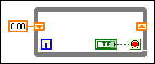

You have not wired a data input to the right hand element of a shift register on the block diagram. LabVIEW cannot determine what new value to store in the shift register when the register finishes one iteration of the loop and returns to the beginning.
To correct this error, right-click the right hand shift register and select Create»Control from the shortcut menu, or wire a data input to the right hand element of the shift register.